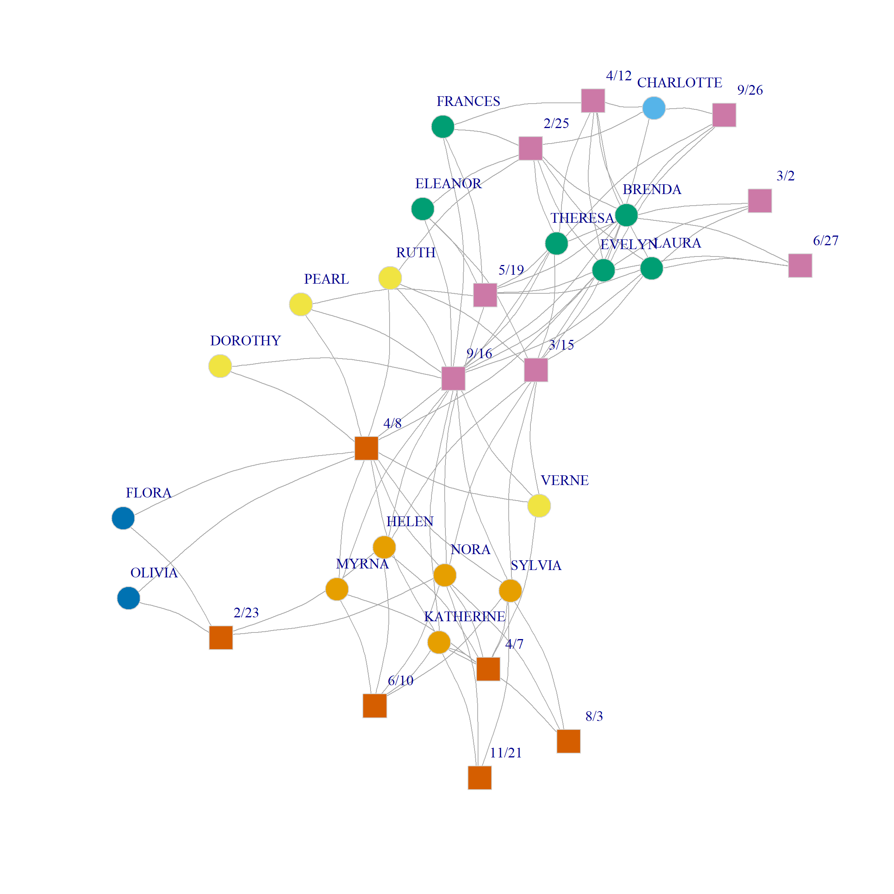

Community Detection in Two Mode Networks
In the CA handout, we took a first stab at finding communities in two networks taking the simplest case of splitting a two-mode network into two-communities. We later saw, when discussing spectral clustering approaches approaches to community detection how to generalize that approach to split a two-mode network into multiple communities, while evaluating the quality of a given partition using the bipartite generalization of the modularity due to Barber (2007).
One limitation of Barber’s approach is that it can only be used under the assumption that the number of communities is the same for both persons and groups. However, it could be that the optimal partition is actually one in which the people node set is split into a different number of clusters than the group node set.
So we need a way to evaluate the modularity of a partition when we have different number of communities on the people and group side.
Let’s load some data and see how it works.
The Dual Projection Approach to Bipartite Commmunity Detection
To estimate distinct number of communities across the separate modes we follow the dual projection approach of Everett and Borgatti (2013).
We then perform the spectral decomposition of the bi-adjacency matrix, using Correspondence Analysis:
We can now use our trusty k.cuts function from the spectral community detection handout to come up with a bunch of partitions of people and groups based on the first three eigenvectors of the spectral decomposition of the modularity matrix:
k.cuts <- function(x, max = 9) {
clus <- list()
for (i in 1:max) {
set.seed(456) #setting seed because kmeans uses random starting nodes for cluster centroids
k <- i + 1
clus[[i]] <- kmeans(x, k)$cluster
}
return(clus)
}
k.cuts.p <- k.cuts(ca.res$row$coord[, 1:6])
k.cuts.g <- k.cuts(ca.res$col$coord[, 1:6])Finding the Bi-partition with the Best Modularity
OK, now that we have some candidate communities for both the people and groups (stored in the k.cuts.p and k.cuts.g objects) we need to come up with a way of measuring the modularity for a candidate partition that puts the people into \(m\) and the groups into \(n\) communities.
As an example, let’s pick the solution that partitions people into four and groups into three communities:
Given this information we can create a reduced version of the bipartite adjacency matrix counting the proportion of edges that go from person community \(i\) to group community \(j\):
d <- max(C.p, C.g)
e <- matrix(0, d, d)
for (i in 1:d) {
for (j in 1:d) {
e[i, j] = sum(A[C.p == i, C.g == j])
}
}
e [,1] [,2] [,3] [,4]
[1,] 17 2 15 0
[2,] 0 0 4 0
[3,] 0 2 2 0
[4,] 0 0 47 0Suzuki and Wakita (2009) based on work by Murata (2009) suggest using the e matrix above to compute the modularity of this person/group assignment according to the following formula:
\[ Q = \sum_{i, j} = \frac{e_{ij}}{e_{i+}}\left(\frac{e_{ij}}{vol(A)} - \frac{e_{i+}e_{j+}}{vol(A)^2}\right) \]
Where \(e_{ij}\) is the fraction of edges connecting people in the \(i^{th}\) person-community to groups in the \(j^{th}\) group-community, \(e_{i+}\) is the fraction of edges originating from person-community \(i\) (the corresponding row sum of e), \(e_{j+}\) is the fraction of edges originating from nodes in community \(j\) (the corresponding column sum of e), and \(vol(A)\) is the sum of the entries in the bi-adjacency matrix.
So the idea is that given a partition of the person nodes into m communities and a partition of the group nodes into n communities, we can generate an e matrix like the one above and compute the corresponding modularity of that person/group partition using the above equation.
Let’s see how this would work.
To do this, first let’s package the steps we used to find calculate e from a partition and to find \(Q\) from the Suzuki-Wakita modularity equation into a function:
find.mod <- function(w, x, y) {
a <- max(c(x, y))
b <- matrix(0, a, a)
for (i in 1:a) {
for (j in 1:a) {
b[i, j] = sum(w[x == i, y == j])
}
}
Q <- 0
c <- rowSums(b)
d <- colSums(b)
e <- sum(w)
for (i in 1:a) {
for (j in 1:a) {
if (c[i] > 0) {
Q <- Q + (b[i, j]/c[i] * (b[i, j]/e - (c[i]*d[j])/e^2))
}
}
}
return(Q)
}So for the e matrix from the above example, \(Q\) would be:
Which looks like a positive number. But is it the biggest of all the possible community partition combinations between people and groups?
To answer this question, we can use the find.mod function to compute the modularity between every pair of partition combinations between people and groups that we calculated earlier; since we computed eight different partitions for people and groups this leads to \(8 \times 8 = 64\) pairs.
Here’s a wrapper function over find.mod that computes the corresponding modularity values for each pair:
mod.mat <- function(d) {
q <- matrix(0, d, d)
for (i in 1:d) {
for (j in 1:d) {
q[i, j] <- find.mod(A, k.cuts.p[[i]], k.cuts.g[[j]])
}
}
return(q)
}
Q <- round(mod.mat(8), 3)
Q [,1] [,2] [,3] [,4] [,5] [,6] [,7] [,8]
[1,] 0.205 0.115 0.083 0.063 0.064 0.066 0.057 0.048
[2,] 0.212 0.132 0.100 0.076 0.077 0.081 0.070 0.065
[3,] 0.208 0.144 0.111 0.084 0.090 0.087 0.075 0.078
[4,] 0.223 0.149 0.138 0.109 0.116 0.112 0.101 0.093
[5,] 0.224 0.150 0.139 0.117 0.123 0.120 0.108 0.100
[6,] 0.219 0.148 0.149 0.127 0.122 0.126 0.115 0.108
[7,] 0.222 0.153 0.154 0.133 0.133 0.135 0.123 0.119
[8,] 0.222 0.155 0.156 0.134 0.135 0.140 0.128 0.120Interestingly, the analysis suggests that the maximum modularity \(Q = 0.223\) is obtained with a partition of people into five communities and groups into two communities corresponding to cells \((4, 1)\) of the above matrix.
Here’s what this community assignment looks like in the Southern Women data:

The analysis separates two groups of densely connected actors of size six and five, respectively, namely, \(\{Brenda, Theresa, Laura, Frances, Evelyn, Eleanor\}\) and \(\{Katherine, Nora, Sylvia, Myrna, Helen\}\) along with their corresponding events from the one another. In the same way, \(\{Pearl, Dorothy, Ruth, Verne\}\) form a community of more peripheral actors who selectively attend the more popular events; \(\{Flora, Olivia\}\) are a two-actor community occupying the most peripheral position. Among the core set of actor \(\{Charlotte\}\) occupies a singleton-community of her own.
Events are partitioned into two broad groups: One the one hand, we have those selectively selectively attended by the larger community of densely connected actors along with the most popular events; on the other hand, we have the events selectively attended by the smaller group of densely connected actors.